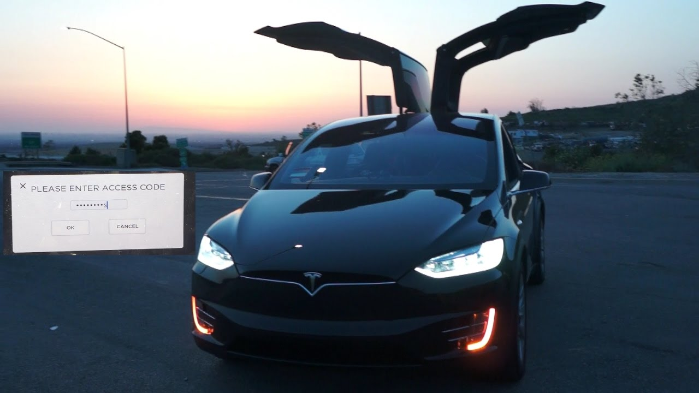
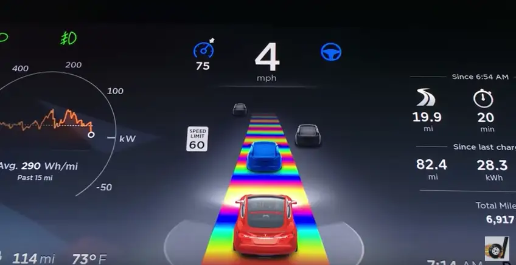

Tesla Inc. is a an American multinational automotive company that weel-known for its many electric vehicles and stationary battery energy storages. First incorporated as Tesla Motors, Inc in 2003 by Martin Eberhard and Marc Tarpenning, the company sought to build a car manufacturing and technology company focusing on batteries and computer software. In 2008, Elon Musk became CEO and started to develop the first generation of car models by Tesla, called the Roadster.
Tesla products contain a variety of Easter Eggs hidden in their systems hiding video games and unique pop culture references portrayed as a unique feature. Some well-known features include certain voice commands unlocking and activating certain features such as Sentry Mode and Mario Kart.
Model X Light Show Mode
"Rainbow Road" screen on Tesla GPS
 